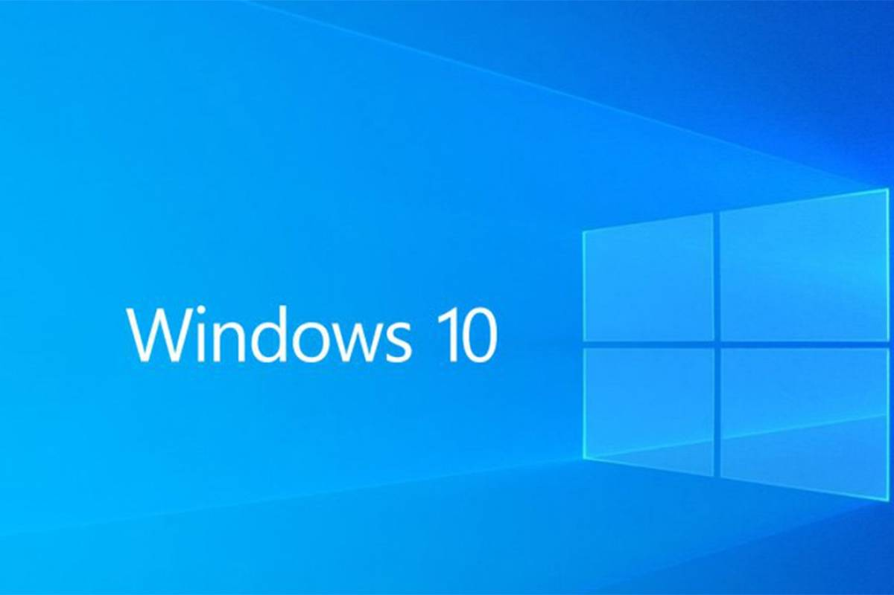
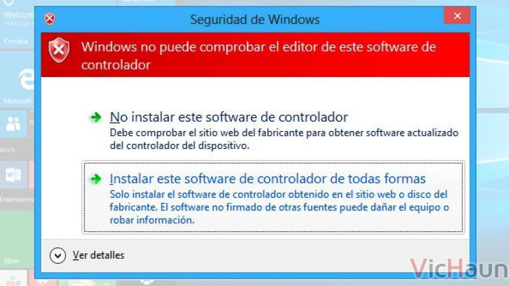
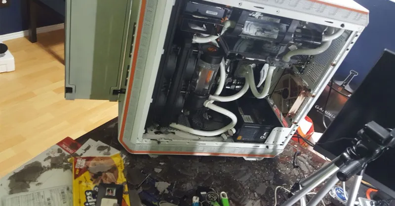
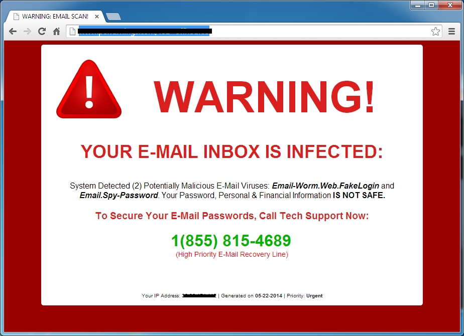
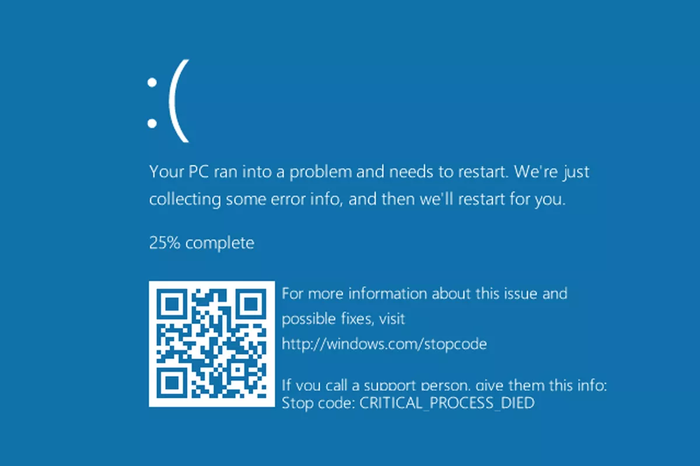

Reparar un libro dañado de excel

1. En la pestaña Archivo, haga clic en Abrir. En Excel 2013 o Excel 2016, haga clic en la ubicación en la que se encuentra la hoja de cálculo y haga clic en examinar. En el cuadro de diálogo Abrir, seleccione el libro dañado que quiere abrir. Haga clic en la flecha situada junto al botón Abrir y después haga clic en Abrir y reparar. Siga uno de estos procedimientos: Para recuperar todos los datos posibles del libro, haga clic en Reparar. Para extraer los valores y las fórmulas del libro cuando no es posible repararlo, haga clic en Extraer datos.
Excel no responde, se bloquea o deja de funcionar
Iniciar Excel en modo seguro El modo seguro permite iniciar Excel sin que se produzcan ciertos programas de inicio. Para abrir Excel en modo seguro, presione y mantenga presionada la tecla Ctrl mientras inicia el programa o use el modificador /Safe (Excel. exe/Safe) cuando inicie el programa desde la línea de comandos. Al ejecutar Excel en modo seguro, se omite la funcionalidad y la configuración, como la ubicación de inicio alternativa, las barras de herramientas modificadas, la carpeta XLStart y los complementos de Excel. Sin embargo, los complementos COM se excluyen.
Código de error 30145 al instalar Office
Reinicie su dispositivo e intente instalar Office nuevamente, luego repare su aplicación de Office desde el Panel de control, si no funciona desinstale y vuelva a instalar Office o eliminar Office manualmente.
Producto desactivado
La instalación de Office en su computadora se cerró o desactivó ", "solucion": "Seleccione Iniciar sesión e ingrese a su cuenta de Microsoft 365. Esto activará Office. Si alcanzó su límite de inicio de sesión (Familia de Microsoft 365), o si no quedan instalaciones de Office (Microsoft 365 para empresas), puede cerrar sesión o desactivar otra instalación de Office
Soluciona problemas de Windows Update
El método que siempre se recomienda para actualizar Windows 10 es a través de Windows Update. Sin embargo, esta herramienta no siempre funciona correctamente, y puede que a veces te encuentres con diferentes errores durante la instalación. Si no entiendes muy bien el mensaje de error que te están dando, la herramienta más sencilla para intentar solucionarlo es ejecutando el solucionador de problemas nativo de Windows 10.
Incompatibilidades por drivers y actualizaciones
Acceder a la barra de tareas y, en el cuadro de búsqueda, escribir ‘actualizaciones’ para seleccionar aquí Buscar actualizaciones, que debería ser el primer resultado sugerido. Una vez aquí, de nuevo pulsaremos en Buscar actualizaciones para que se localicen, si existieran, nuevas versiones de controladores o incluso drivers que no hayan llegado a ser instalados aún. Y mientras, podemos pulsar en ‘cambiar horas activas’ para establecer en qué horario queremos que el ordenador se pueda reiniciar para aplicar actualizaciones de forma automática. Evidentemente, deberíamos seleccionar un horario en que usamos el ordenador de forma habitual, para que los reinicios se hagan únicamente cuando el PC esté en desuso.
Como detectar un fallo en el hardware de tu PC
Ingresa en el buscador de “Inicio” el programa denominado “Usar herramientas para mejorar el rendimiento”. Una vez hayas abierto la ventana, del lado izquierdo encontrarás la opción de “Herramientas avanzadas”. Allí harás clic sobre la opción de “Generar un informe de mantenimiento del sistema”. El tiempo de espera es muy mínimo, y este resultado se encarga de mostrar cada uno de los errores que posee el sistema. Cada problema estará acompañado de un signo de suma para otorgarte mayor detalle, al igual que una serie de recomendaciones para solucionarlo fácilmente.
Como eliminar virus en Windows 10
Para comprobar tu computadora y eliminar cualquier malware necesitarás un programa de antivirus. Windows 10 incluye Windows Defender, el propio antivirus de Microsoft. Ejecuta una exploración del sistema en el antivirus. Se eliminará automáticamente o se te ofrecerá eliminar cualquier malware que encuentre. Tu programa de antivirus también tiene la opción de utilizarse en segundo plano, comprobando los archivos antes de abrir para asegurarse de que no hay malware y supervisar tu sistema de que no se está ejecutando ningún virus. Checa de que siempre esté activo y funcionando.
No funciona el WiFi en Windows
El WiFi está conectado, pero no tenemos conexión a Internet En algunas ocasiones, Windows 10 puede indicar que estamos conectados, pero en realidad no poder navegar por Internet. Esto puede estar causado por un problema con la asignación de una dirección IP o de la DNS. Para ello, en Configuración > Actualización y Seguridad > Solucionar Problemas pincharemos en “Conexiones a Internet. Busque y corrija problemas con la conexión a Internet o a sitios web”.
Pantalla azul Windows
Uno de los problemas que hemos visto está relacionado con el hardware así que es importante que desconectes todo lo posible para ver si el problema se ha solucionado. Puedes retirar todos los periféricos como impresoras, memorias USB o pendrives o discos duros y arrancar de nuevo. Si no hay problema después de reiniciar, ve conectando estos periféricos para saber cuál es el que provoca el error. Pero también puedes comprobar lo que hay dentro de tu torre quitando los módulos de RAM y conectándolos pasado medio minuto aproximadamente. Si hay excesiva suciedad en la caja del ordenador también puedes aprovechar para limpiarla un poco por si está causando problema. Busca actualizaciones